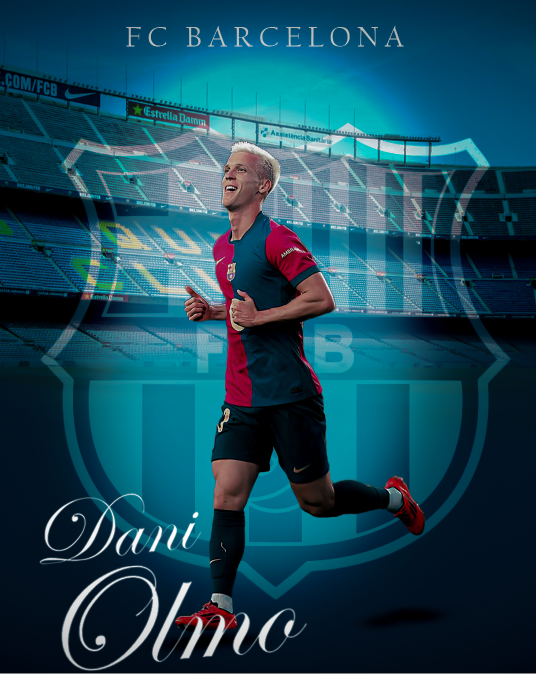
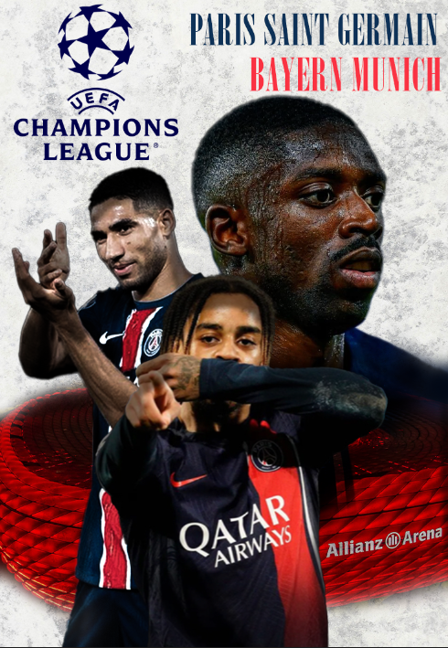

Bienvenue sur MinuteFoot
Le média foot.
Dani Olmo, le magician espagnol
Dani Olmo, récemment transféré au FC Barcelone en provenance du RB Leipzig, a rapidement démontré son impact sur le terrain. Lors de ses débuts en Liga, il a offert une performance décisive en marquant le but de la victoire contre le Rayo Vallecano, permettant ainsi au Barça de prendre la tête du championnat1. Son arrivée pour un montant de 60 millions d'euros s'inscrit dans une stratégie de renforcement des Blaugranas, qui ont signé avec lui un contrat jusqu'en 2032. Formé à Barcelone avant de partir pour le Dinamo Zagreb, Olmo revient dans son club d'origine avec une expérience internationale enrichie par ses performances lors de l'Euro 2024, où il a été un acteur clé pour l'Espagne2. Sa polyvalence et sa vision du jeu apportent une nouvelle dynamique au milieu de terrain catalan, offrant à l'entraîneur Hansi Flick des options tactiques supplémentaires. Cependant, son intégration n'a pas été sans défis. Une blessure aux ischio-jambiers l'a écarté des terrains pendant plusieurs semaines, compliquant les plans du Barça dans une période déjà marquée par des absences importantes. Malgré ces obstacles, Olmo reste un atout majeur pour le FC Barcelone, prêt à contribuer à la quête de succès du club cette saison. 
Bayern munich-Paris saint germain, la fin du reve parisien ?
Munich, 26 novembre 2024 - Ce soir, l'Allianz Arena sera le théâtre d'un affrontement crucial entre le Bayern Munich et le Paris Saint-Germain, deux géants du football européen en quête de rédemption dans cette phase de groupes de la Ligue des Champions. Un Contexte Sous Haute Pression Le PSG, actuellement en difficulté avec seulement quatre points récoltés, doit impérativement s'imposer pour espérer une qualification en phase finale. Leur parcours jusqu'à présent a été marqué par une défaite à l'extérieur contre Arsenal, soulignant les défis auxquels ils font face loin de chez eux. 
Qui sommes-nous ?
Minute Foot est un média dynamique dédié à l'univers du football, offrant une couverture exhaustive des actualités, analyses et contenus exclusifs liés au sport roi. En tant que plateforme de référence pour les passionnés de football, Minute Foot se distingue par sa capacité à engager les fans à travers des articles informatifs, des interviews captivantes et des reportages immersifs.